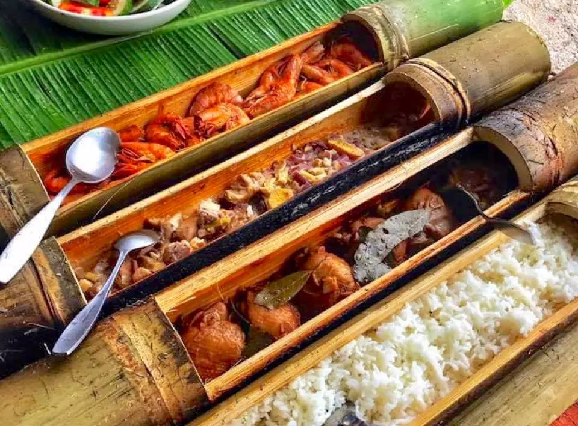
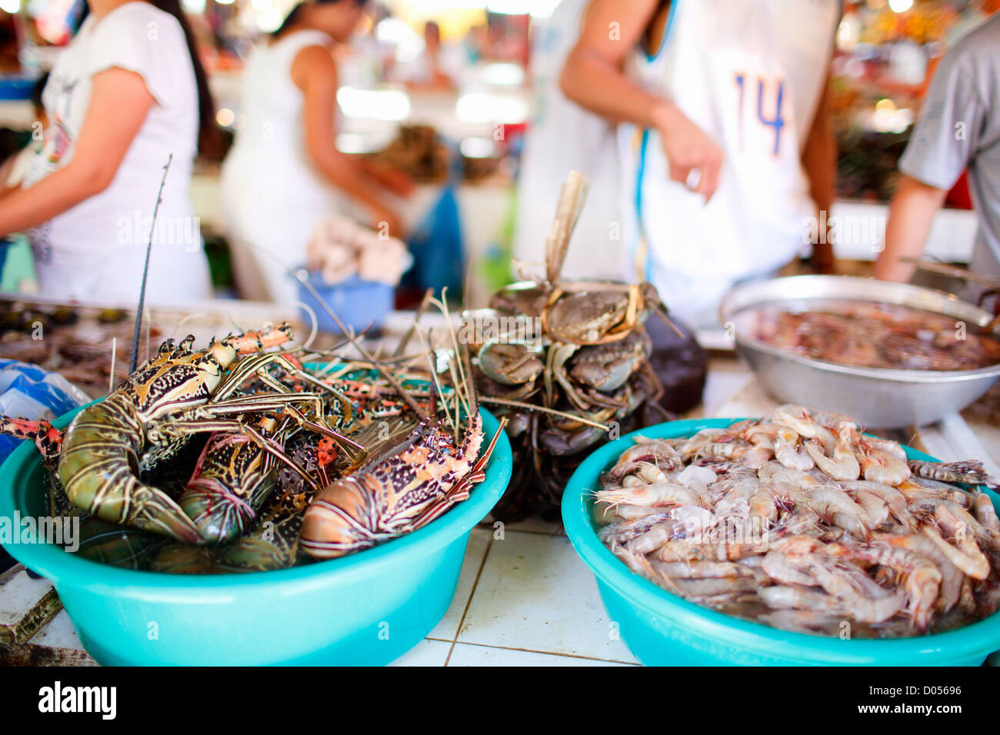
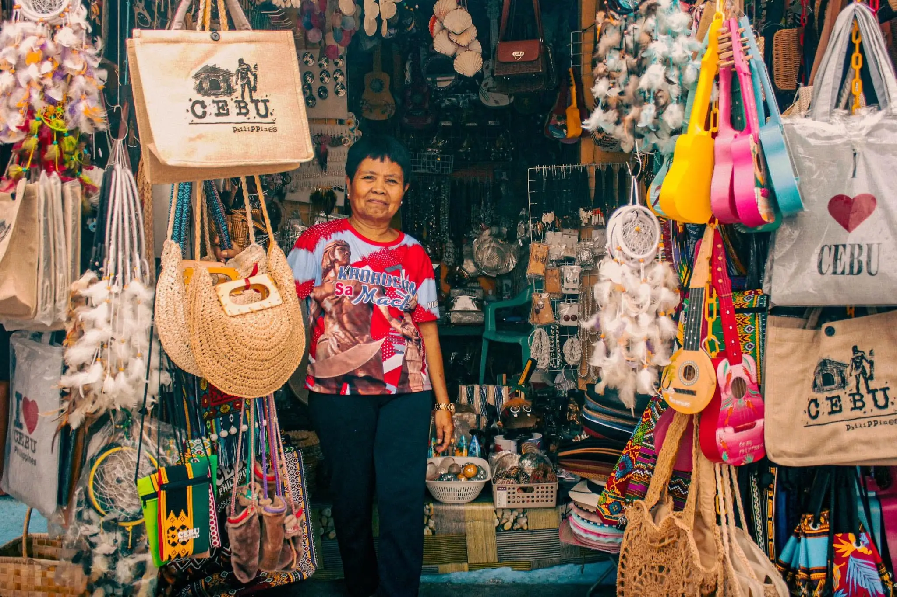
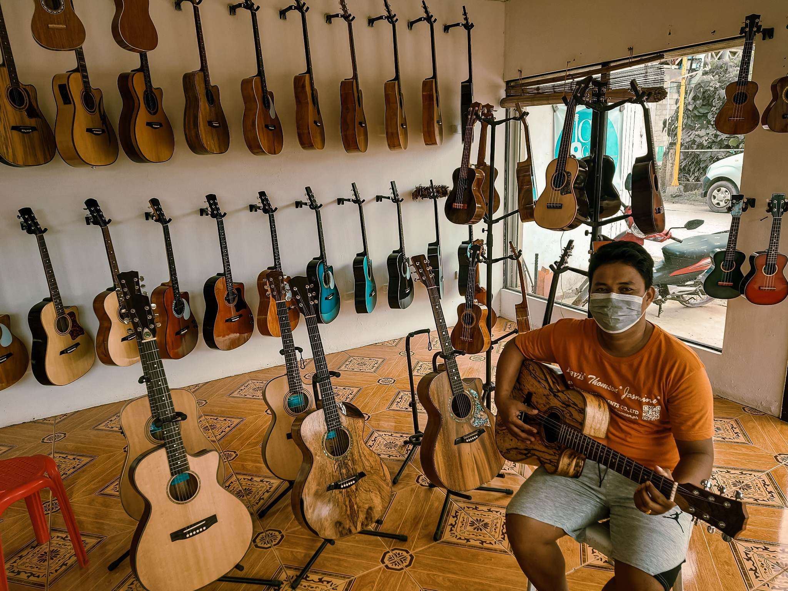
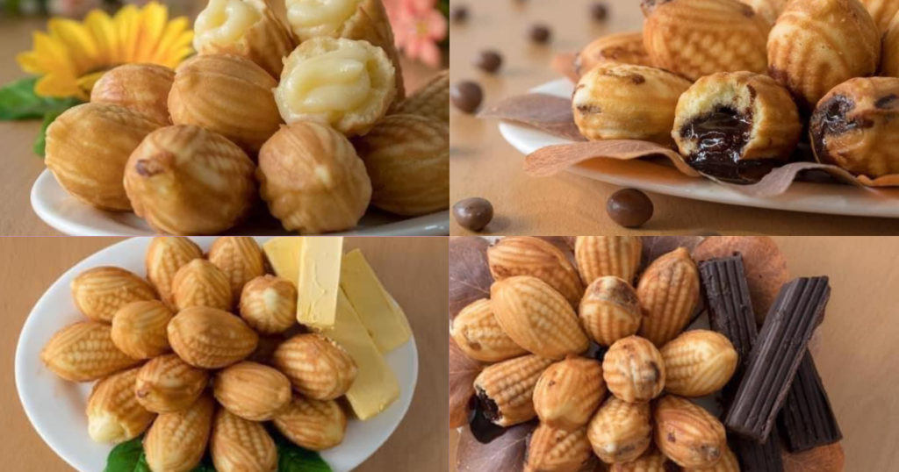
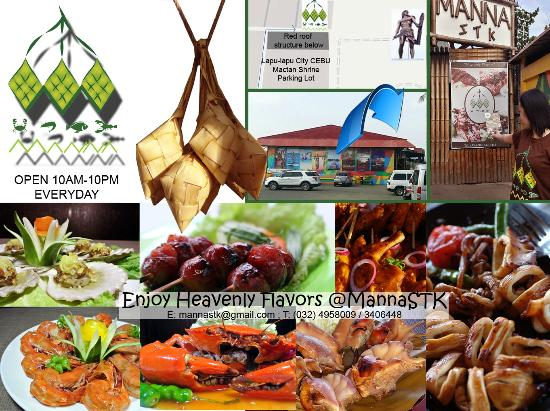

Lapu-Lapu City, nestled on the picturesque shores of Mactan Island in the Philippines, is not only renowned for its stunning landscapes and rich cultural heritage but also for its diverse array of locally-produced goods and delicacies.

One of the most beloved products of Lapu-Lapu City is its delectable seafood. Blessed with an abundance of marine resources, the city's fishermen harvest a variety of fresh seafood daily, including succulent fish, plump prawns, and sweet crabs. Visitors can savor these ocean delights at local seafood markets, restaurants, and eateries, indulging in the flavors of the sea.

In addition to seafood, Lapu-Lapu City is also known for its traditional handicrafts and artisanal products. Skilled craftsmen and women create intricately woven baskets, colorful textiles, and beautiful pottery using age-old techniques passed down through generations. These unique handicrafts make for wonderful souvenirs and gifts, providing visitors with a tangible reminder of their time spent in Lapu-Lapu City.

Dive deeper than the beach! Lapu-Lapu City, beyond its stunning shores, boasts a rich history and a vibrant tradition of crafting exquisite guitars. For generations, skilled artisans have built a reputation for quality instruments, making Lapu-Lapu the undisputed "Guitar Capital of the Philippines." Immerse yourself in culture and discover the music that resonates from this historic island.

For those with a sweet tooth, Lapu-Lapu City offers a tantalizing array of local delicacies and treats. Sample freshly baked bibingka, a traditional rice cake topped with salted egg and cheese, or indulge in sweet and sticky mangoes, hailed as some of the best in the Philippines. Don't forget to try the city's famous dried danggit (rabbitfish), a crispy and flavorful snack that's perfect for munching on the go.

Lapu-Lapu City offers a feast for the senses beyond the beach. Dive into the lively local markets, savor delicious food at a seaside restaurant, or find unique treasures in the shops. Mactan Island beckons you to explore its rich cultural heritage through its delectable cuisine and handcrafted goods. Every taste, drink, and memento embodies the island's traditions, skills, and culinary mastery.